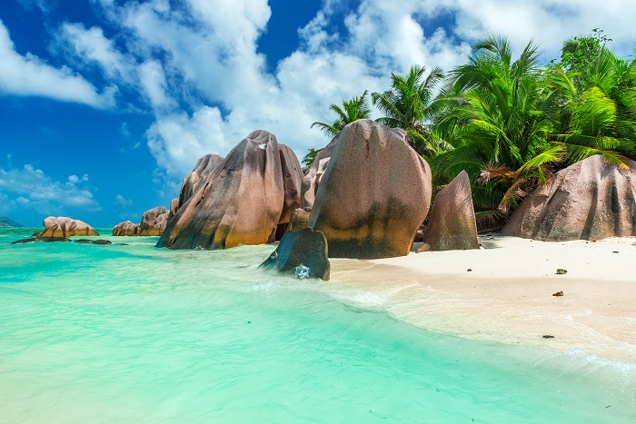
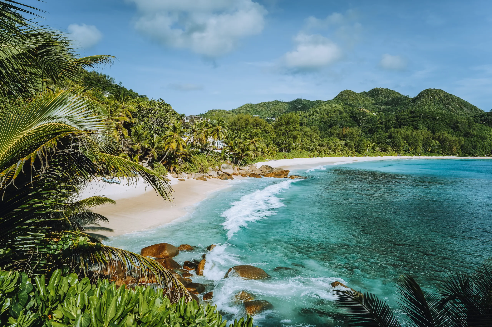
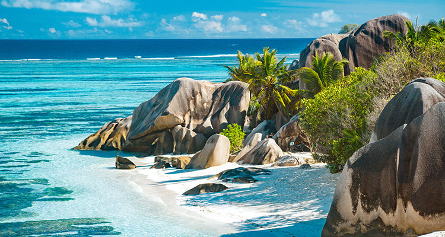
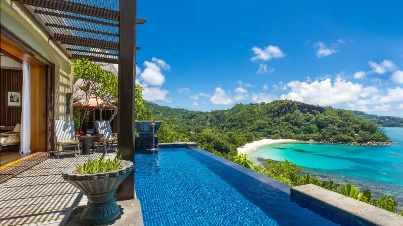
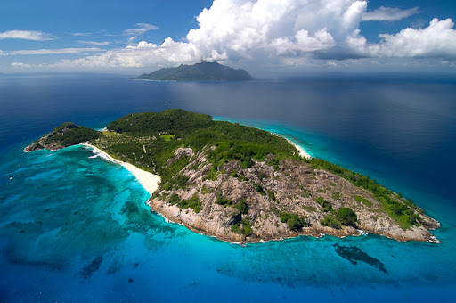
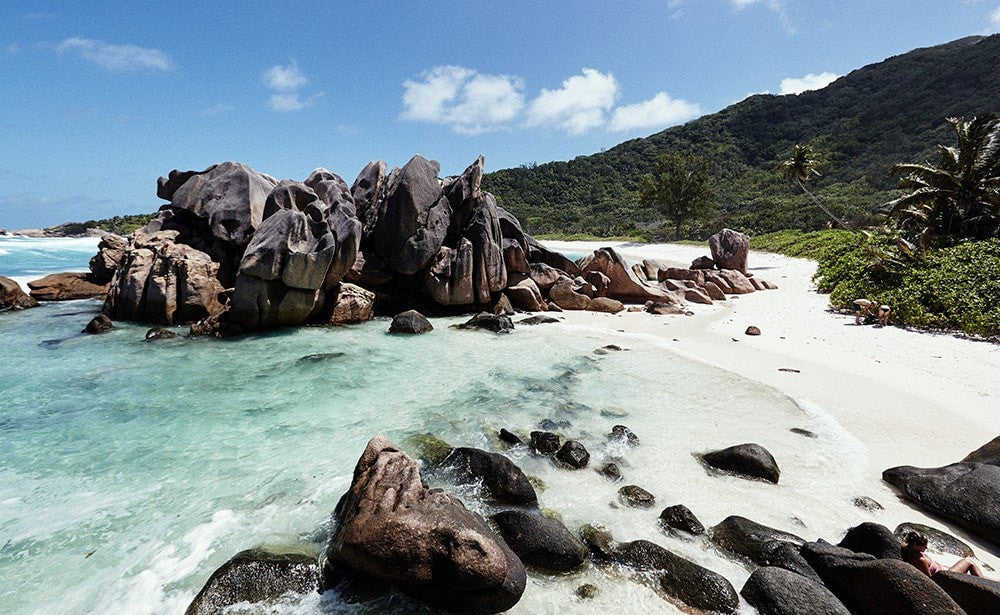

The history of Seychelles is as vibrant and diverse as its breathtaking natural landscapes. Located in the Indian Ocean off the eastern coast of Africa, Seychelles is an archipelago consisting of 115 islands. Its history encompasses waves of exploration, colonization, slavery, and eventually independence, shaping the Seychellois society and culture we know today.


The islands of Seychelles were uninhabited until around the 16th century when Arab traders first visited the archipelago. However, it wasn't until the 18th century that the islands were formally explored and settled by Europeans. In 1609, the British East India Company established a temporary settlement but abandoned it soon after. The French were the first Europeans to formally colonize the islands in 1756, naming them after Jean Moreau de Séchelles, the French finance minister at the time.
Under French rule, Seychelles became a crucial stopover for ships traveling between Europe and the Indian Ocean. The islands were used as a base for the trade of spices, slaves, and other commodities. Plantations were established, and slaves were brought from Africa to work on them. The British gained control of Seychelles through the Treaty of Paris in 1814, following the Napoleonic Wars. Under British rule, Seychelles became a dependency of Mauritius until it gained separate colonial status in 1903. The British administration continued to rely on slave labor until slavery was abolished in the British Empire in 1835.


Throughout the 20th century, Seychelles saw significant social and economic changes. The introduction of new industries such as coconut and vanilla cultivation, as well as tourism, diversified the economy. Political movements advocating for greater autonomy and independence began to emerge. In 1976, Seychelles achieved independence from British colonial rule under the leadership of James Mancham, who became the first President of Seychelles. However, in a coup d'état led by France-Albert René in 1977, Mancham was ousted, and René established a socialist one-party state.
Since gaining independence, Seychelles has undergone political stability and economic development. The country transitioned from a socialist state to a multi-party democracy in 1993, and subsequent elections have been held regularly. Tourism and fishing have become the mainstays of the economy, driving growth and development. Seychelles has also gained recognition for its commitment to environmental conservation, with a significant portion of its territory dedicated to national parks and protected areas.


The history of Seychelles is a testament to resilience and adaptation in the face of colonialism and exploitation. From its early days as a stopover for trading ships to its modern identity as a tourist destination and advocate for environmental preservation, Seychelles continues to evolve while celebrating its rich cultural heritage. As the islands move forward, they remain rooted in their past, embodying a unique blend of African, Asian, and European influences that make Seychelles truly one of a kind.